B.9 EXPLORATORY
B.9.1 Internal Symbolic Racism
B.9.1.1 Table
| critical (N=507) |
naive (N=536) |
Overall (N=1043) |
|
|---|---|---|---|
| Internal Symbolic Racism | |||
| Mean (SD) | 19.4 (6.90) | 20.6 (6.60) | 20.0 (6.77) |
| Median [Min, Max] | 20.0 [5.00, 33.0] | 21.0 [5.00, 33.0] | 20.0 [5.00, 33.0] |
| External Symbolic Racism | |||
| Mean (SD) | 16.1 (5.94) | 17.0 (5.58) | 16.6 (5.77) |
| Median [Min, Max] | 16.0 [5.00, 31.0] | 17.0 [5.00, 31.0] | 17.0 [5.00, 31.0] |
B.9.1.2 Distributions
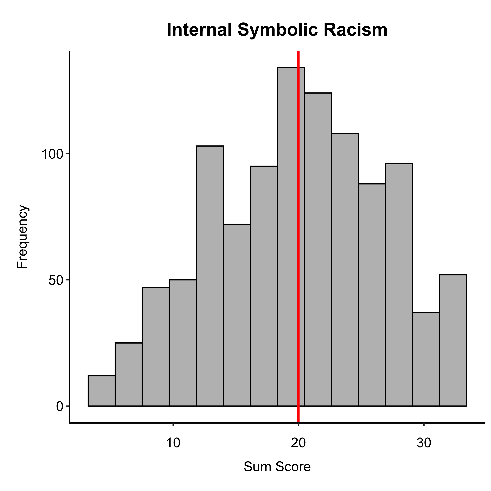
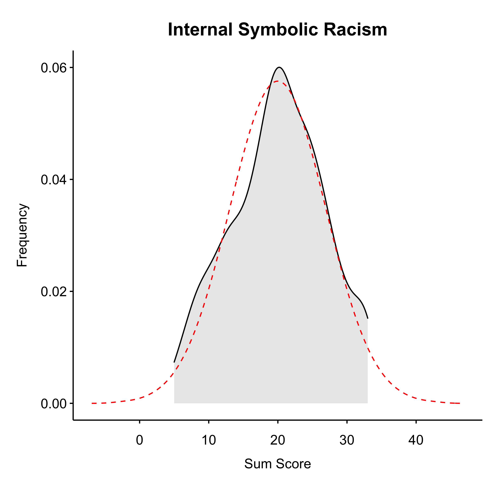
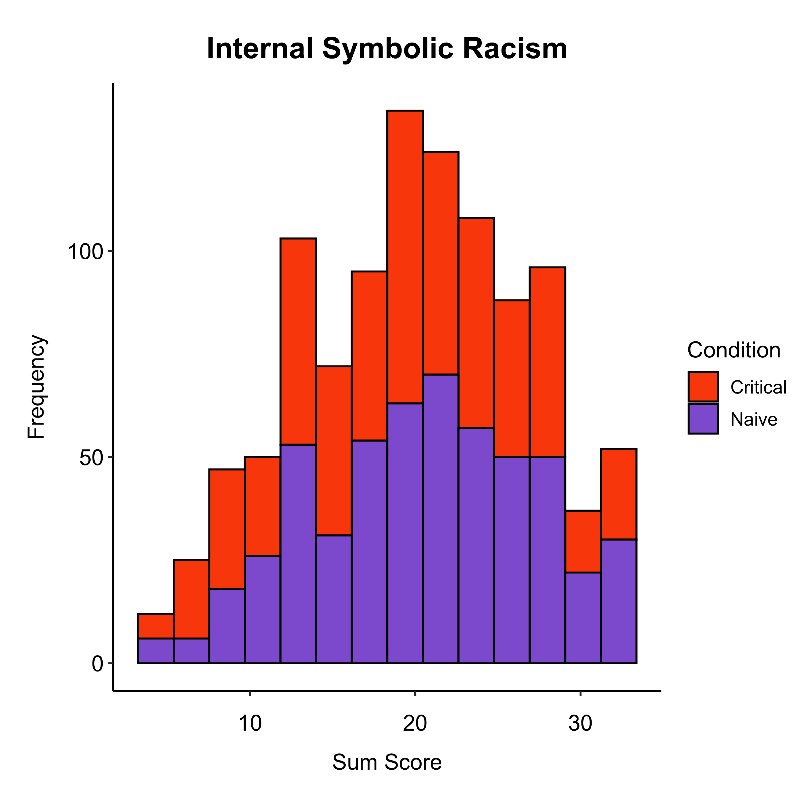
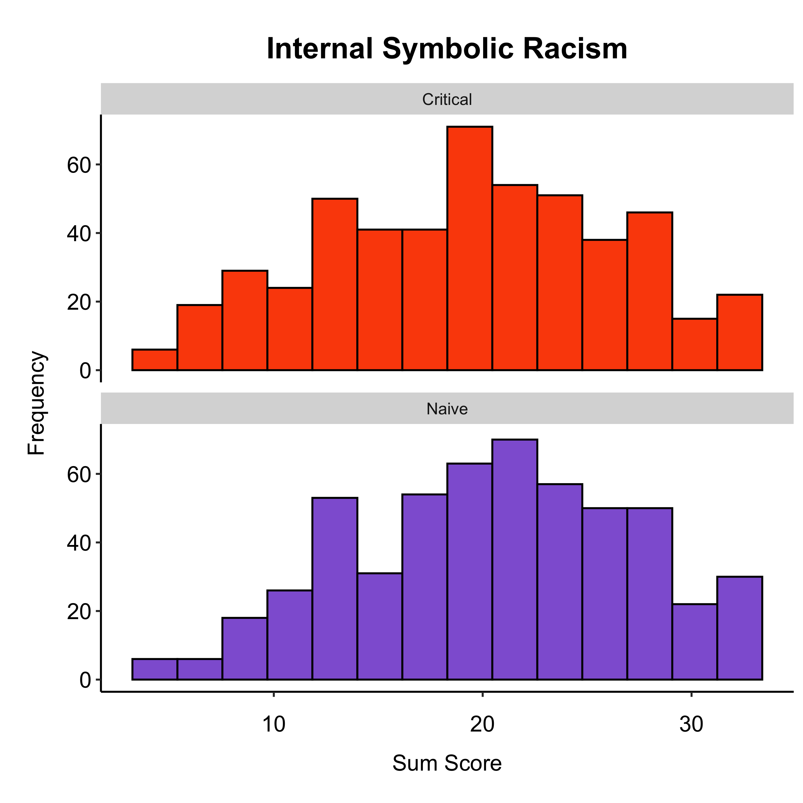
(#fig:figs-sri.s-dist-s2)Distribution of Support for Punitive Policies by Condition in Study 2
B.9.1.3 Pairwise
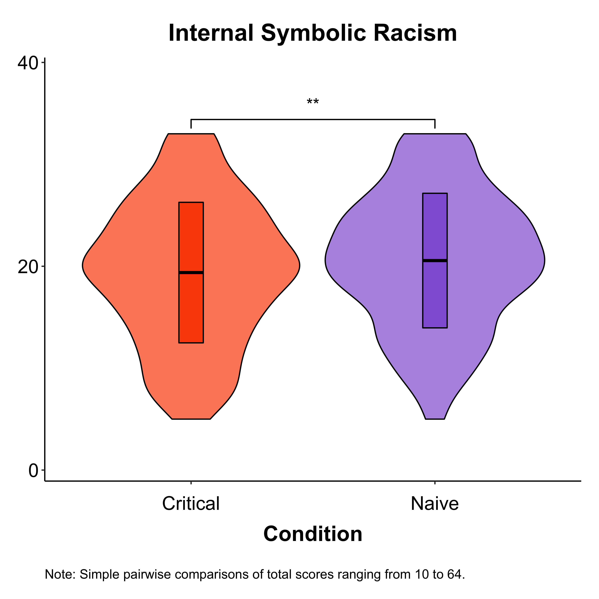
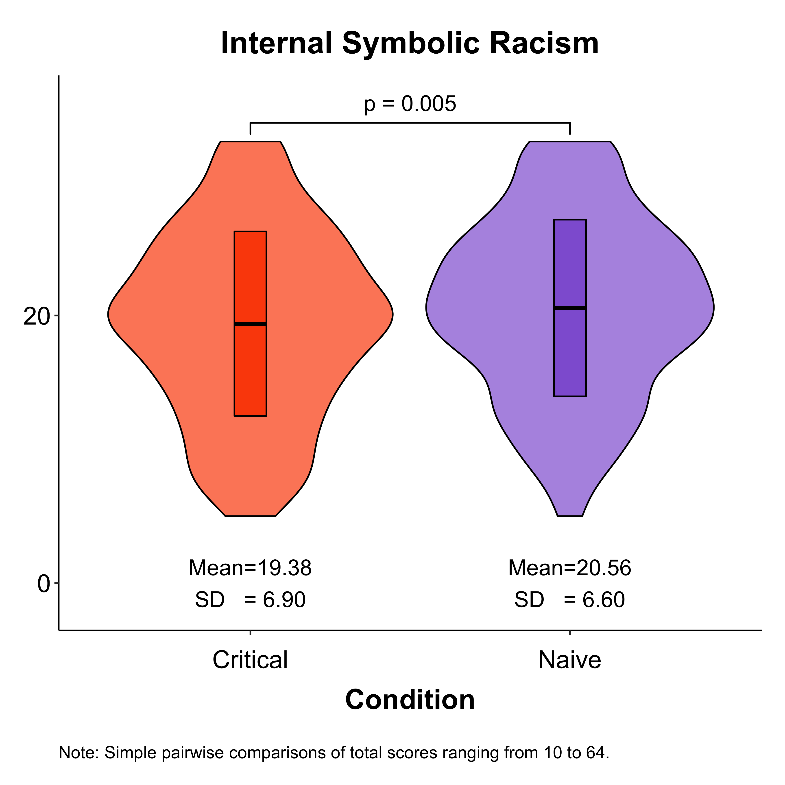
(#fig:figs2-sri.s-s2)Support for Internal Symbolic Racism (Sum) by Condition in Study 2
B.9.1.4 ANCOVA
| Term | SS | df | Statistic | p |
|---|---|---|---|---|
| (Intercept) | 7030.6 | 1 | 210.928 | 0.000 |
| condition.f | 298.5 | 1 | 8.956 | 0.003 |
| political | 10715.1 | 1 | 321.471 | 0.000 |
| female.f | 449.6 | 1 | 13.488 | 0.000 |
| race.f | 1177.7 | 8 | 4.417 | 0.000 |
| age.c | 56.8 | 1 | 1.704 | 0.192 |
| edu3.f | 210.3 | 2 | 3.154 | 0.043 |
| adj_income.c | 15.2 | 1 | 0.456 | 0.500 |
| Residuals | 34231.6 | 1027 | NA | NA |
| group1 | group2 | estimate | se | df | conf.low | conf.high | statistic | p | p.adj | p.adj.signif |
|---|---|---|---|---|---|---|---|---|---|---|
| Critical | Naive | -1.08 | 0.36 | 1027 | -1.78 | -0.371 | -2.99 | 0.003 | 0.003 | ** |
| Condition | EMM | SE | df | Conf.low | Conf.high |
|---|---|---|---|---|---|
| Critical | 18.4 | 0.710 | 1027 | 17.0 | 19.8 |
| Naive | 19.5 | 0.711 | 1027 | 18.1 | 20.8 |
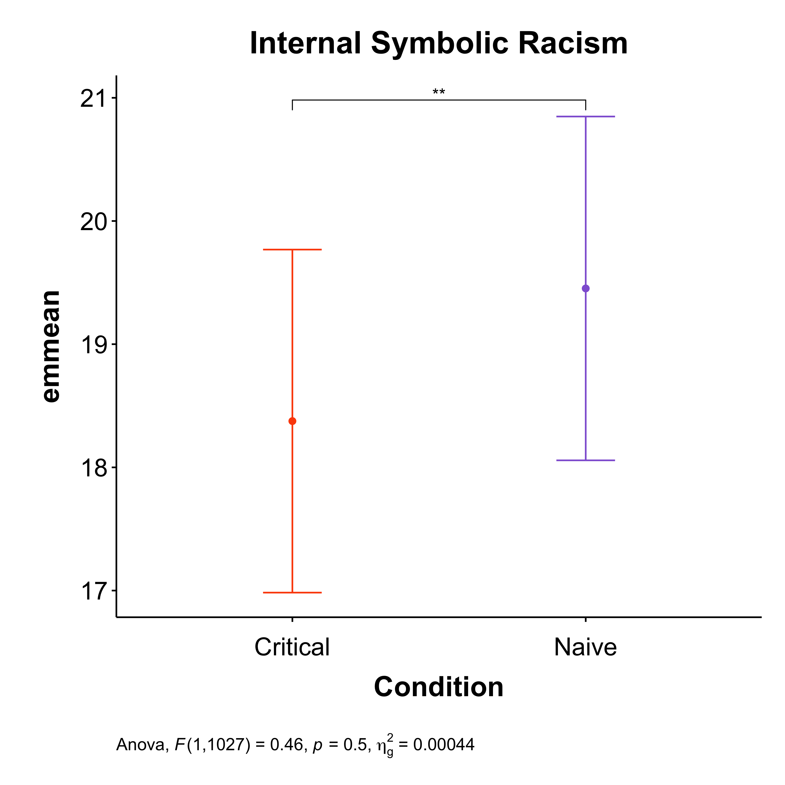
(#fig:figs-sri.s-emm.plot-s2)Estimated Marginal Means of Internal Symbolic Racism (Sum) by Condition in Study 2
B.9.1.5 OLS
| Dependent variable: | |||
| Internal Symbolic Racism (Sum) | |||
| (1) | (2) | (3) | |
| Constant | 20.00*** (0.21) | 12.10*** (0.83) | 12.10*** (0.83) |
| condition.f1 | -0.59** (0.21) | -0.54** (0.18) | -0.39 (0.46) |
| political | 1.76*** (0.10) | 1.76*** (0.10) | |
| female | -1.38*** (0.38) | -1.39*** (0.38) | |
| race.f1 | 1.24 (0.72) | 1.27 (0.72) | |
| race.f2 | 0.25 (1.24) | 0.27 (1.24) | |
| race.f3 | -2.19* (0.89) | -2.15* (0.90) | |
| race.f4 | 5.36** (2.05) | 5.33** (2.05) | |
| race.f5 | 2.24* (1.03) | 2.25* (1.03) | |
| race.f6 | -4.30 (3.02) | -4.35 (3.03) | |
| race.f7 | -0.97 (3.02) | -0.99 (3.02) | |
| race.f8 | -3.18 (2.19) | -3.18 (2.20) | |
| age.c | -0.26 (0.20) | -0.26 (0.20) | |
| edu3.f1 | 0.71* (0.29) | 0.72* (0.29) | |
| edu3.f2 | -0.10 (0.25) | -0.10 (0.25) | |
| adj_income.c | -0.14 (0.21) | -0.15 (0.21) | |
| condition.f1:political | -0.03 (0.10) | ||
| Observations | 1,043 | 1,043 | 1,043 |
| R2 | 0.01 | 0.28 | 0.28 |
| Adjusted R2 | 0.01 | 0.27 | 0.27 |
| Residual Std. Error | 6.75 (df = 1041) | 5.77 (df = 1027) | 5.78 (df = 1026) |
| F Statistic | 7.96** (df = 1; 1041) | 27.10*** (df = 15; 1027) | 25.30*** (df = 16; 1026) |
| Note: | p<0.05; p<0.01; p<0.001 | ||
B.9.1.6 By Political
| Contrasts | Est. | SE | df | t | p |
|---|---|---|---|---|---|
| liberal Critical effect | -3.981 | 0.424 | 1024 | -9.382 | 0.000 |
| moderate Critical effect | -0.983 | 0.439 | 1024 | -2.241 | 0.136 |
| conservative Critical effect | 3.467 | 0.379 | 1024 | 9.156 | 0.000 |
| liberal Naive effect | -3.305 | 0.425 | 1024 | -7.784 | 0.000 |
| moderate Naive effect | 0.135 | 0.420 | 1024 | 0.321 | 0.999 |
| conservative Naive effect | 4.668 | 0.367 | 1024 | 12.724 | 0.000 |
| Contrasts | Est. | SE | df | t | p |
|---|---|---|---|---|---|
| liberal Critical effect | -3.981 | 0.424 | 1024 | -9.382 | 0.000 |
| moderate Critical effect | -0.983 | 0.439 | 1024 | -2.241 | 0.136 |
| conservative Critical effect | 3.467 | 0.379 | 1024 | 9.156 | 0.000 |
| liberal Naive effect | -3.305 | 0.425 | 1024 | -7.784 | 0.000 |
| moderate Naive effect | 0.135 | 0.420 | 1024 | 0.321 | 0.999 |
| conservative Naive effect | 4.668 | 0.367 | 1024 | 12.724 | 0.000 |
| Contrasts | Est. | SE | df | t | p |
|---|---|---|---|---|---|
| liberal Critical effect | -3.981 | 0.424 | 1024 | -9.382 | 0.000 |
| moderate Critical effect | -0.983 | 0.439 | 1024 | -2.241 | 0.136 |
| conservative Critical effect | 3.467 | 0.379 | 1024 | 9.156 | 0.000 |
| liberal Naive effect | -3.305 | 0.425 | 1024 | -7.784 | 0.000 |
| moderate Naive effect | 0.135 | 0.420 | 1024 | 0.321 | 0.999 |
| conservative Naive effect | 4.668 | 0.367 | 1024 | 12.724 | 0.000 |
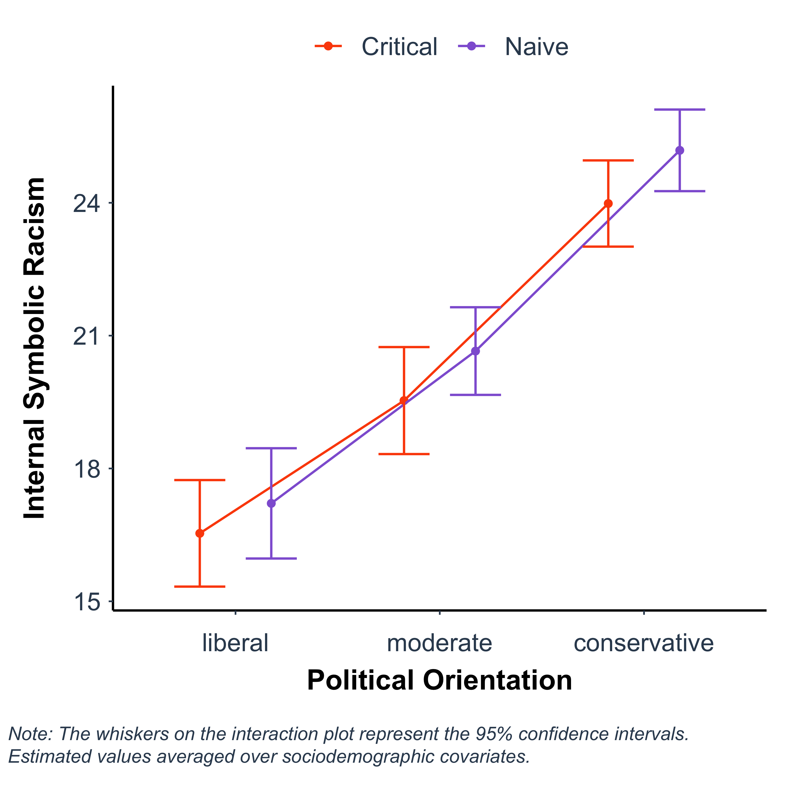
(#fig:figs-sri.s-violin-s2)Plots of Internal Symbolic Racism (Sum) by Condition and Political Orientation
B.9.2 Mediation by Internal Symbolic Racism
B.9.2.1 punitive
## NULL| Estimate | 95% CI Lower | 95% CI Upper | p-value | |
|---|---|---|---|---|
| ACME | -0.120 | -0.196 | -0.046 | 0.004 |
| ADE | -0.439 | -0.579 | -0.298 | 0.000 |
| Total Effect | -0.560 | -0.724 | -0.393 | 0.000 |
| Prop. Mediated | 0.214 | 0.090 | 0.336 | 0.004 |
## Call: psych::mediate(y = punitive ~ critical + (sri.c) - political -
## female - white - age.c - college - adj_income.c, data = s2,
## main = "internal symbolic racism mediating punitive support in Study 2")
##
## Direct effect estimates (traditional regression) (c') X + M on Y
## punitive* se t df
## Intercept 4.342 0.155 28.09 1034
## critical -0.450 0.072 -6.27 1034
## sri.c 0.765 0.041 18.45 1034
## Prob
## Intercept 0.00000000000000000000000000000000000000000000000000000000000000000000000000000000000000000000000000000000000000000000000000000000165
## critical 0.00000000051669999999999998381151198719655852353849212477143737487494945526123046875000000000000000000000000000000000000000000000000
## sri.c 0.00000000000000000000000000000000000000000000000000000000000000000648899999999999922313246773397335694852044365737728921662675285784
##
## R = 1.04 R2 = 1.07 F = -7391 on 2 and 1034 DF p-value: 1
##
## Total effect estimates (c) (X on Y)
## punitive* se t df
## Intercept 3.576 0.172 20.85 1035
## critical -0.567 0.082 -6.89 1035
## Prob
## Intercept 0.00000000000000000000000000000000000000000000000000000000000000000000000000000000745
## critical 0.00000000000956700000000000073512452111519592111606169471116345448535867035388946533
##
## 'a' effect estimates (X on M)
## sri.c se t df Prob
## Intercept -1.002 0.112 -8.97 1035 0.00000000000000000131
## critical -0.153 0.054 -2.87 1035 0.00425999999999999990
##
## 'b' effect estimates (M on Y controlling for X)
## punitive* se t df
## sri.c 0.765 0.041 18.4 1034
## Prob
## sri.c 0.00000000000000000000000000000000000000000000000000000000000000000649
##
## 'ab' effect estimates (through all mediators)
## punitive* boot sd lower upper
## critical -0.117 -0.117 0.042 -0.205 -0.038

## NULL| Estimate | 95% CI Lower | 95% CI Upper | p-value | |
|---|---|---|---|---|
| ACME | -0.179 | -0.238 | -0.127 | 0.000 |
| ADE | 0.022 | -0.069 | 0.116 | 0.666 |
| Total Effect | -0.157 | -0.263 | -0.049 | 0.002 |
| Prop. Mediated | 1.120 | 0.692 | 3.018 | 0.002 |
## Call: psych::mediate(y = sri.c ~ critical + (punitive) - political -
## female - white - age.c - college - adj_income.c, data = s2,
## main = "Reverse test of internal symbolic racism mediating punitive support in Study 2")
##
## Direct effect estimates (traditional regression) (c') X + M on Y
## sri.c* se t df
## Intercept -2.160 0.115 -18.711 1034
## critical 0.030 0.048 0.636 1034
## punitive 0.324 0.018 18.448 1034
## Prob
## Intercept 0.000000000000000000000000000000000000000000000000000000000000000000165
## critical 0.524599999999999955235807647113688290119171142578125000000000000000000
## punitive 0.000000000000000000000000000000000000000000000000000000000000000006489
##
## R = 0.564 R2 = 0.318 F = 241 on 2 and 1034 DF p-value: 0.0000000000000000000000000000000000000000000000000000000000000000000000000000000000000148
##
## Total effect estimates (c) (X on Y)
## sri.c* se t df Prob
## Intercept -1.002 0.112 -8.97 1035 0.00000000000000000131
## critical -0.153 0.054 -2.87 1035 0.00425999999999999990
##
## 'a' effect estimates (X on M)
## punitive se t df
## Intercept 3.576 0.172 20.85 1035
## critical -0.567 0.082 -6.89 1035
## Prob
## Intercept 0.00000000000000000000000000000000000000000000000000000000000000000000000000000000745
## critical 0.00000000000956700000000000073512452111519592111606169471116345448535867035388946533
##
## 'b' effect estimates (M on Y controlling for X)
## sri.c* se t df
## punitive 0.324 0.018 18.4 1034
## Prob
## punitive 0.00000000000000000000000000000000000000000000000000000000000000000649
##
## 'ab' effect estimates (through all mediators)
## sri.c* boot sd lower upper
## critical -0.184 -0.184 0.03 -0.245 -0.127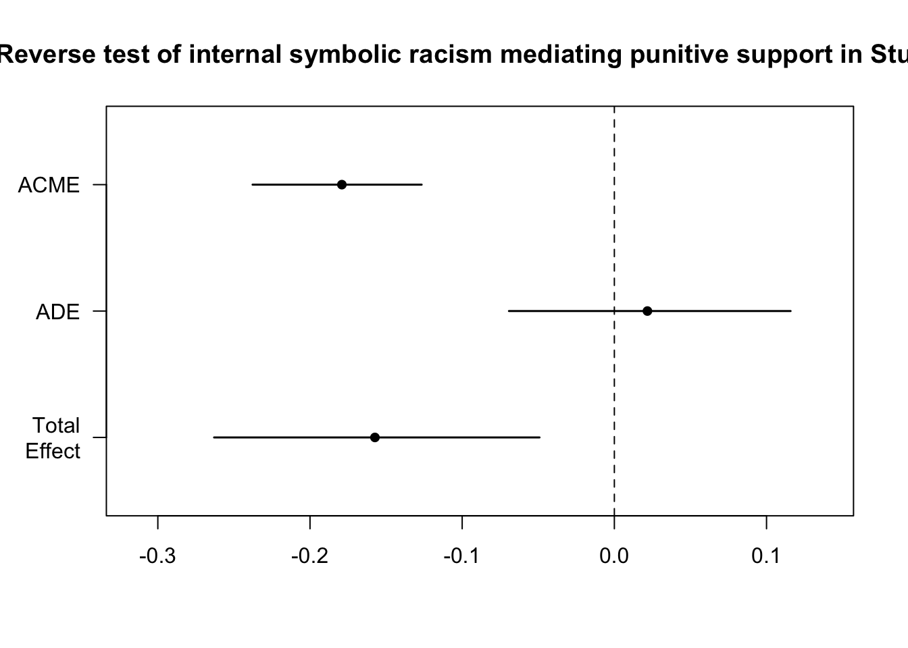
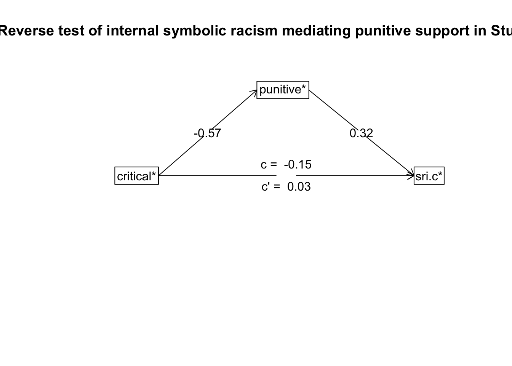
B.9.2.2 restorative
## NULL| Estimate | 95% CI Lower | 95% CI Upper | p-value | |
|---|---|---|---|---|
| ACME | 0.063 | 0.021 | 0.105 | 0.000 |
| ADE | 0.083 | -0.046 | 0.228 | 0.212 |
| Total Effect | 0.146 | 0.013 | 0.285 | 0.032 |
| Prop. Mediated | 0.427 | 0.113 | 2.137 | 0.032 |
## Call: psych::mediate(y = restorative ~ critical + (sri.c) - political -
## female - white - age.c - college - adj_income.c, data = s2,
## main = "internal symbolic racism mediating restorative support in Study 2")
##
## Direct effect estimates (traditional regression) (c') X + M on Y
## restorative* se t df
## Intercept 5.247 0.145 36.23 1034
## critical 0.088 0.067 1.31 1034
## sri.c -0.380 0.039 -9.80 1034
## Prob
## Intercept 0.00000000000000000000000000000000000000000000000000000000000000000000000000000000000000000000000000000000000000000000000000000000000000000000000000000000000000000000000000000000000000000323
## critical 0.18879999999999999560351682248438009992241859436035156250000000000000000000000000000000000000000000000000000000000000000000000000000000000000000000000000000000000000000000000000000000000000
## sri.c 0.00000000000000000000099579999999999982979773839548668970722956357678715679719160663863064542056235950440168380737304687500000000000000000000000000000000000000000000000000000000000000000000
##
## R = 1.03 R2 = 1.05 F = -9925 on 2 and 1034 DF p-value: 1
##
## Total effect estimates (c) (X on Y)
## restorative* se t df
## Intercept 5.629 0.146 38.6 1035
## critical 0.147 0.070 2.1 1035
## Prob
## Intercept 0.0000000000000000000000000000000000000000000000000000000000000000000000000000000000000000000000000000000000000000000000000000000000000000000000000000000000000000000000000000000000000000000000000000000000957
## critical 0.0361199999999999993294252931264054495841264724731445312500000000000000000000000000000000000000000000000000000000000000000000000000000000000000000000000000000000000000000000000000000000000000000000000000000
##
## 'a' effect estimates (X on M)
## sri.c se t df Prob
## Intercept -1.002 0.112 -8.97 1035 0.00000000000000000131
## critical -0.153 0.054 -2.87 1035 0.00425999999999999990
##
## 'b' effect estimates (M on Y controlling for X)
## restorative* se t df Prob
## sri.c -0.38 0.039 -9.8 1034 0.000000000000000000000996
##
## 'ab' effect estimates (through all mediators)
## restorative* boot sd lower upper
## critical 0.058 0.058 0.021 0.018 0.103

## NULL| Estimate | 95% CI Lower | 95% CI Upper | p-value | |
|---|---|---|---|---|
| ACME | -0.033 | -0.065 | -0.002 | 0.040 |
| ADE | -0.127 | -0.226 | -0.027 | 0.006 |
| Total Effect | -0.160 | -0.261 | -0.055 | 0.002 |
| Prop. Mediated | 0.206 | 0.010 | 0.569 | 0.042 |
## Call: psych::mediate(y = sri.c ~ critical + (restorative) - political -
## female - white - age.c - college - adj_income.c, data = s2,
## main = "Reverse test of internal symbolic racism mediating restorative support in Study 2")
##
## Direct effect estimates (traditional regression) (c') X + M on Y
## sri.c* se t df Prob
## Intercept 0.254 0.167 1.52 1034 0.127900000000000013677948
## critical -0.121 0.051 -2.35 1034 0.018999999999999999528155
## restorative -0.223 0.023 -9.80 1034 0.000000000000000000000996
##
## R = 0.412 R2 = 0.17 F = 106 on 2 and 1034 DF p-value: 0.00000000000000000000000000000000000000000134
##
## Total effect estimates (c) (X on Y)
## sri.c* se t df Prob
## Intercept -1.002 0.112 -8.97 1035 0.00000000000000000131
## critical -0.153 0.054 -2.87 1035 0.00425999999999999990
##
## 'a' effect estimates (X on M)
## restorative se t df
## Intercept 5.629 0.146 38.6 1035
## critical 0.147 0.070 2.1 1035
## Prob
## Intercept 0.0000000000000000000000000000000000000000000000000000000000000000000000000000000000000000000000000000000000000000000000000000000000000000000000000000000000000000000000000000000000000000000000000000000000957
## critical 0.0361199999999999993294252931264054495841264724731445312500000000000000000000000000000000000000000000000000000000000000000000000000000000000000000000000000000000000000000000000000000000000000000000000000000
##
## 'b' effect estimates (M on Y controlling for X)
## sri.c* se t df Prob
## restorative -0.223 0.023 -9.8 1034 0.000000000000000000000996
##
## 'ab' effect estimates (through all mediators)
## sri.c* boot sd lower upper
## critical -0.033 -0.033 0.016 -0.065 -0.002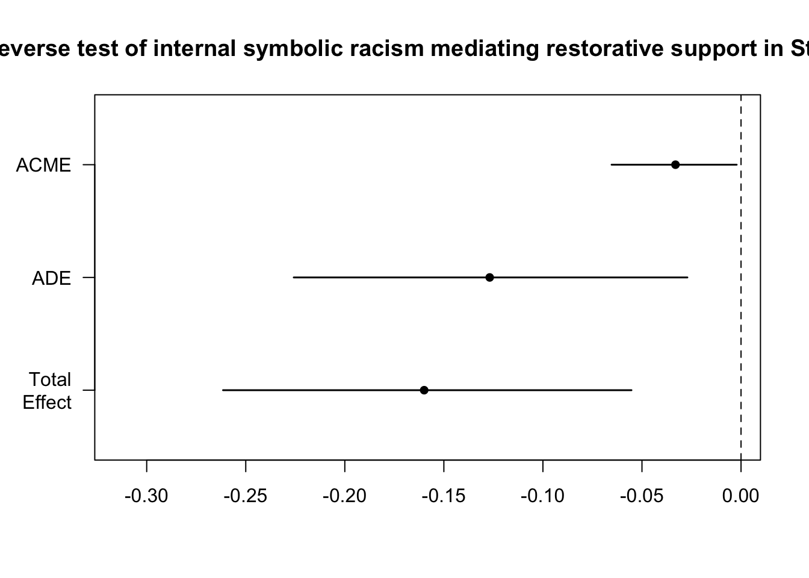
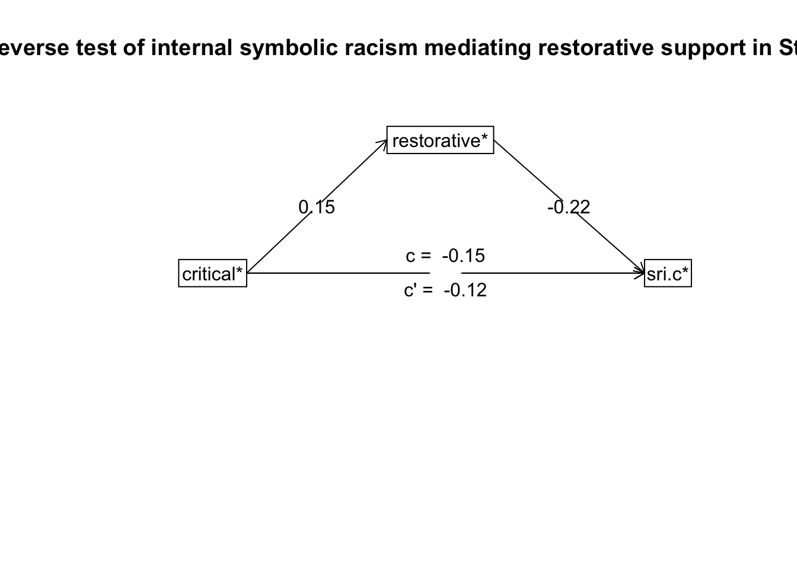
B.9.3 External Symbolic Racism
B.9.3.1 Table
| critical (N=507) |
naive (N=536) |
Overall (N=1043) |
|
|---|---|---|---|
| External Symbolic Racism | |||
| Mean (SD) | 16.1 (5.94) | 17.0 (5.58) | 16.6 (5.77) |
| Median [Min, Max] | 16.0 [5.00, 31.0] | 17.0 [5.00, 31.0] | 17.0 [5.00, 31.0] |
B.9.3.2 Distributions
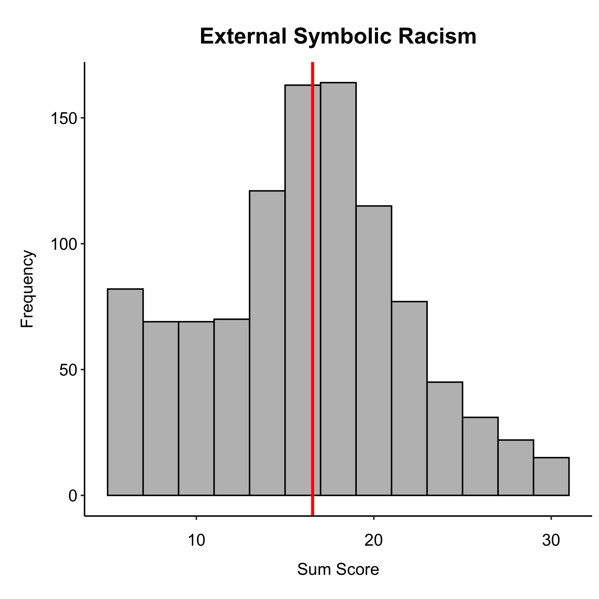
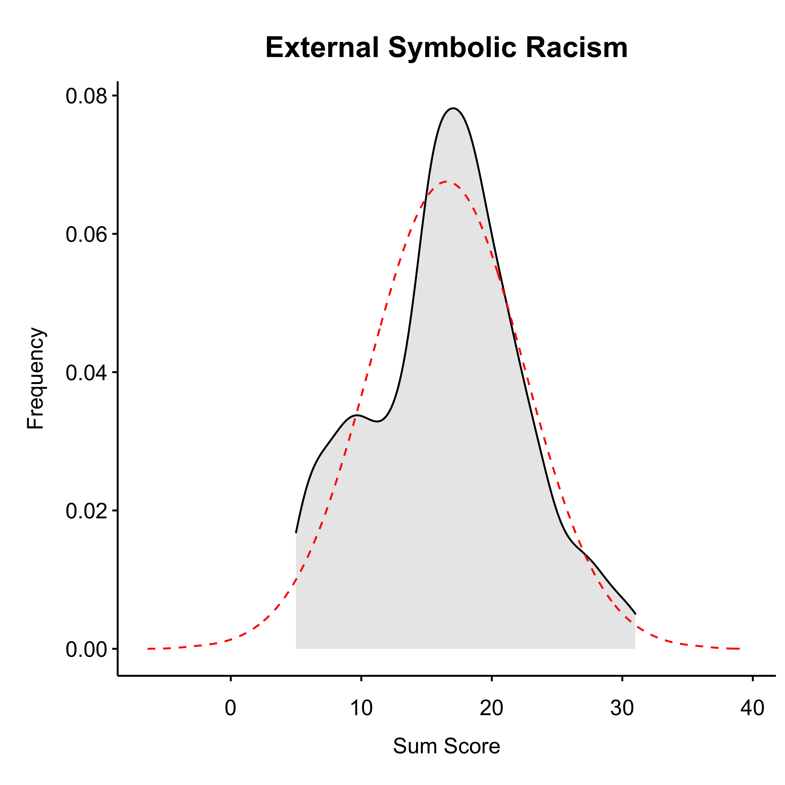
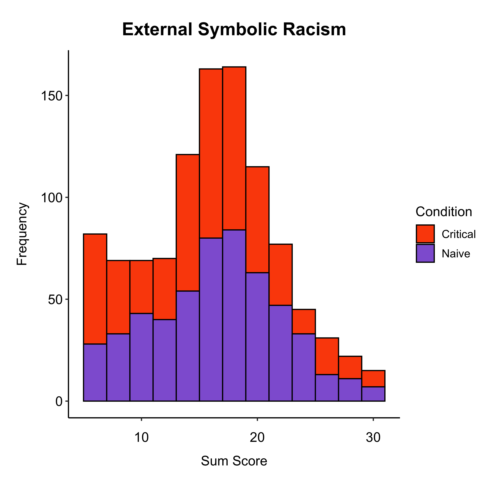
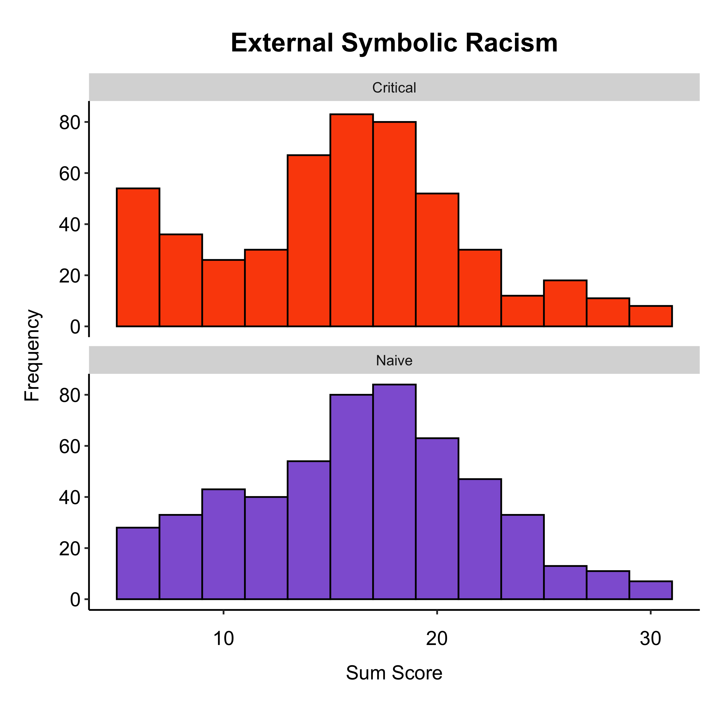
(#fig:figs-sre.s-dist-s2)Distribution of Support for Punitive Policies by Condition in Study 2
B.9.3.3 Pairwise
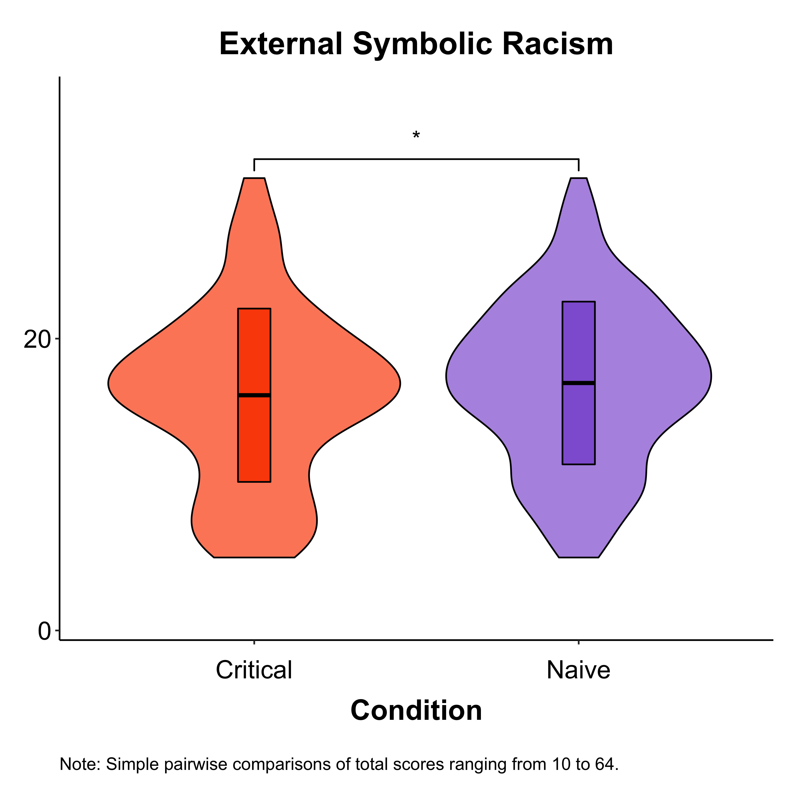
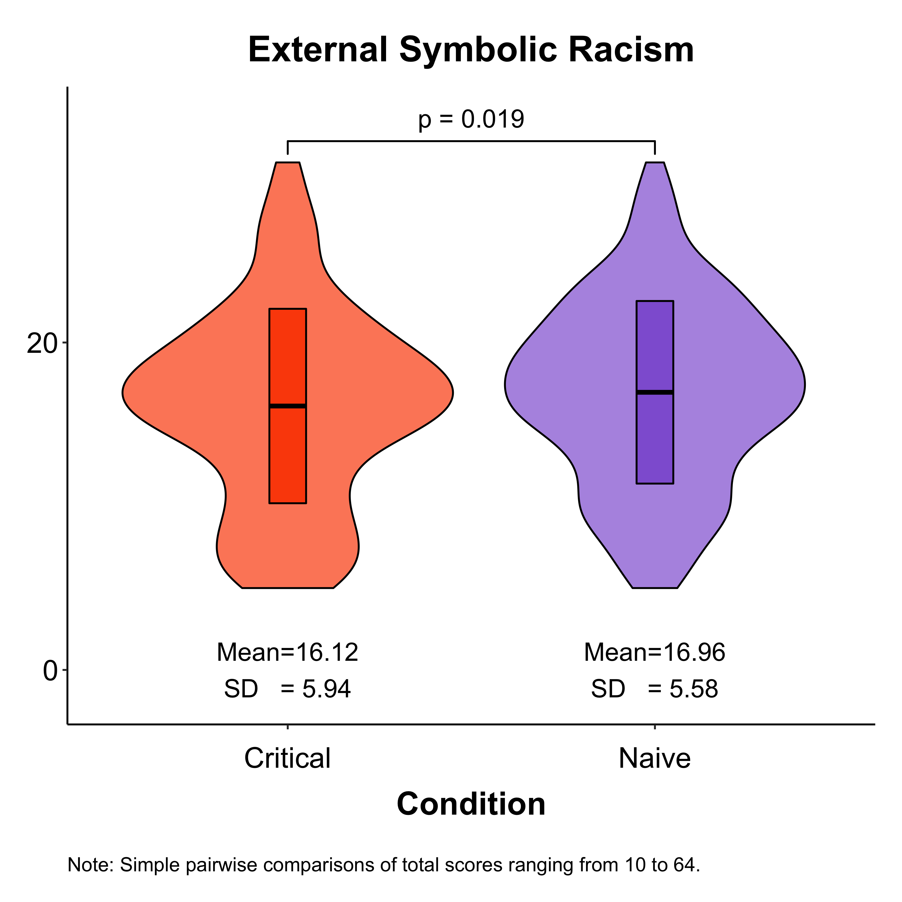
(#fig:figs2-sre.s-s2)Support for External Symbolic Racism (Sum) by Condition in Study 2
B.9.3.4 ANCOVA
| Term | SS | df | Statistic | p |
|---|---|---|---|---|
| (Intercept) | 5926.886 | 1 | 235.560 | 0.000 |
| condition.f | 119.541 | 1 | 4.751 | 0.030 |
| political | 6886.728 | 1 | 273.708 | 0.000 |
| female.f | 166.894 | 1 | 6.633 | 0.010 |
| race.f | 501.850 | 8 | 2.493 | 0.011 |
| age.c | 15.079 | 1 | 0.599 | 0.439 |
| edu3.f | 369.815 | 2 | 7.349 | 0.001 |
| adj_income.c | 0.001 | 1 | 0.000 | 0.995 |
| Residuals | 25840.196 | 1027 | NA | NA |
| group1 | group2 | estimate | se | df | conf.low | conf.high | statistic | p | p.adj | p.adj.signif |
|---|---|---|---|---|---|---|---|---|---|---|
| Critical | Naive | -0.682 | 0.313 | 1027 | -1.29 | -0.068 | -2.18 | 0.03 | 0.03 |
|
| Condition | EMM | SE | df | Conf.low | Conf.high |
|---|---|---|---|---|---|
| Critical | 16.4 | 0.616 | 1027 | 15.2 | 17.6 |
| Naive | 17.0 | 0.618 | 1027 | 15.8 | 18.3 |
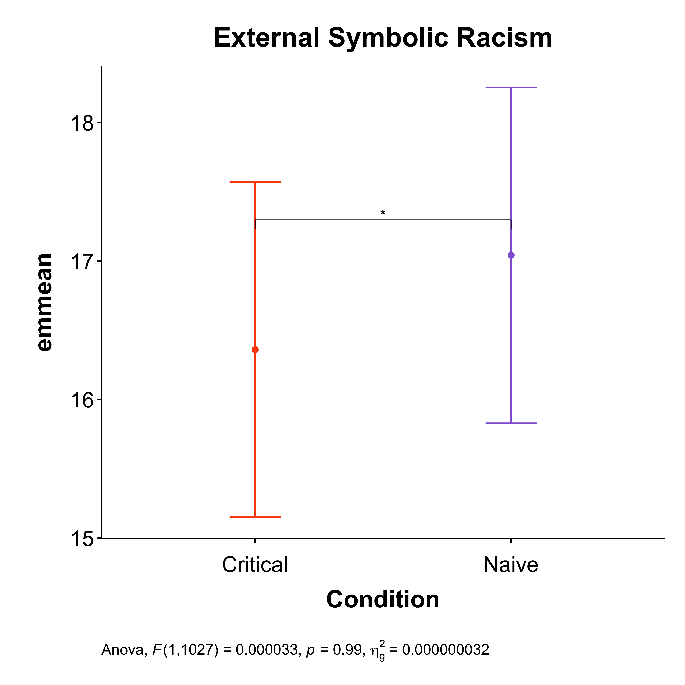
(#fig:figs-sre.s-emm.plot-s2)Estimated Marginal Means of External Symbolic Racism (Sum) by Condition in Study 2
B.9.3.5 OLS
| Dependent variable: | |||
| External Symbolic Racism (Sum) | |||
| (1) | (2) | (3) | |
| Constant | 16.50*** (0.18) | 11.10*** (0.72) | 11.10*** (0.72) |
| condition.f1 | -0.42* (0.18) | -0.34* (0.16) | -0.10 (0.40) |
| political | 1.41*** (0.09) | 1.41*** (0.09) | |
| female | -0.84* (0.33) | -0.85** (0.33) | |
| race.f1 | -0.08 (0.62) | -0.04 (0.63) | |
| race.f2 | -0.86 (1.08) | -0.83 (1.08) | |
| race.f3 | -2.08** (0.78) | -2.03** (0.78) | |
| race.f4 | 2.31 (1.78) | 2.26 (1.78) | |
| race.f5 | 0.66 (0.90) | 0.68 (0.90) | |
| race.f6 | 2.47 (2.63) | 2.40 (2.63) | |
| race.f7 | 2.23 (2.63) | 2.19 (2.63) | |
| race.f8 | -2.57 (1.91) | -2.56 (1.91) | |
| age.c | 0.14 (0.17) | 0.13 (0.17) | |
| edu3.f1 | 0.81** (0.25) | 0.82** (0.25) | |
| edu3.f2 | 0.15 (0.22) | 0.16 (0.22) | |
| adj_income.c | 0.001 (0.19) | -0.002 (0.19) | |
| condition.f1:political | -0.06 (0.09) | ||
| Observations | 1,043 | 1,043 | 1,043 |
| R2 | 0.01 | 0.25 | 0.25 |
| Adjusted R2 | 0.004 | 0.24 | 0.24 |
| Residual Std. Error | 5.76 (df = 1041) | 5.02 (df = 1027) | 5.02 (df = 1026) |
| F Statistic | 5.53* (df = 1; 1041) | 23.40*** (df = 15; 1027) | 21.90*** (df = 16; 1026) |
| Note: | p<0.05; p<0.01; p<0.001 | ||
B.9.3.6 By Political
| Contrasts | Est. | SE | df | t | p |
|---|---|---|---|---|---|
| liberal Critical effect | -3.272 | 0.367 | 1024 | -8.92 | 0.000 |
| moderate Critical effect | -0.583 | 0.379 | 1024 | -1.54 | 0.516 |
| conservative Critical effect | 2.887 | 0.327 | 1024 | 8.82 | 0.000 |
| liberal Naive effect | -3.133 | 0.367 | 1024 | -8.54 | 0.000 |
| moderate Naive effect | 0.665 | 0.363 | 1024 | 1.83 | 0.321 |
| conservative Naive effect | 3.436 | 0.317 | 1024 | 10.83 | 0.000 |
| Contrasts | Est. | SE | df | t | p |
|---|---|---|---|---|---|
| liberal Critical effect | -3.272 | 0.367 | 1024 | -8.92 | 0.000 |
| moderate Critical effect | -0.583 | 0.379 | 1024 | -1.54 | 0.516 |
| conservative Critical effect | 2.887 | 0.327 | 1024 | 8.82 | 0.000 |
| liberal Naive effect | -3.133 | 0.367 | 1024 | -8.54 | 0.000 |
| moderate Naive effect | 0.665 | 0.363 | 1024 | 1.83 | 0.322 |
| conservative Naive effect | 3.436 | 0.317 | 1024 | 10.83 | 0.000 |
| Contrasts | Est. | SE | df | t | p |
|---|---|---|---|---|---|
| liberal Critical effect | -3.272 | 0.367 | 1024 | -8.92 | 0.000 |
| moderate Critical effect | -0.583 | 0.379 | 1024 | -1.54 | 0.516 |
| conservative Critical effect | 2.887 | 0.327 | 1024 | 8.82 | 0.000 |
| liberal Naive effect | -3.133 | 0.367 | 1024 | -8.54 | 0.000 |
| moderate Naive effect | 0.665 | 0.363 | 1024 | 1.83 | 0.322 |
| conservative Naive effect | 3.436 | 0.317 | 1024 | 10.83 | 0.000 |
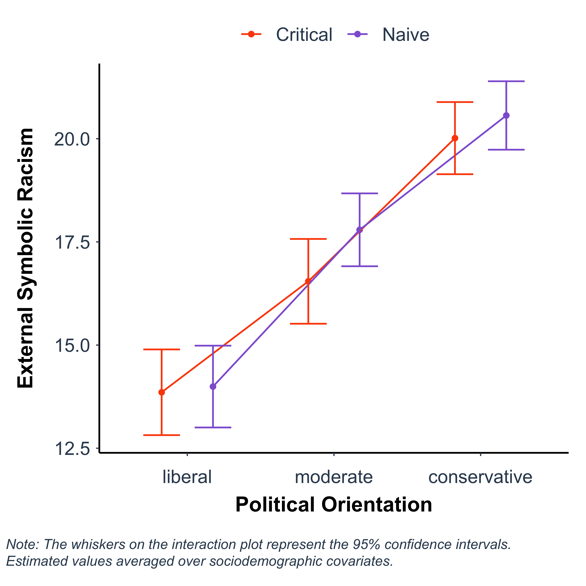
(#fig:figs-sre.s-violin-s2)Plots of External Symbolic Racism (Sum) by Condition and Political Orientation
B.9.4 Mediation by External Symbolic Racism
B.9.4.1 punitive
## NULL| Estimate | 95% CI Lower | 95% CI Upper | p-value | |
|---|---|---|---|---|
| ACME | -0.074 | -0.139 | -0.002 | 0.042 |
| ADE | -0.486 | -0.638 | -0.342 | 0.000 |
| Total Effect | -0.560 | -0.724 | -0.390 | 0.000 |
| Prop. Mediated | 0.133 | 0.005 | 0.238 | 0.042 |
## Call: psych::mediate(y = punitive ~ critical + (sre.c) - political -
## female - white - age.c - college - adj_income.c, data = s2,
## main = "External symbolic racism mediating punitive support in Study 2")
##
## Direct effect estimates (traditional regression) (c') X + M on Y
## punitive* se t df
## Intercept 4.146 0.160 25.86 1034
## critical -0.490 0.075 -6.54 1034
## sre.c 0.635 0.043 14.91 1034
## Prob
## Intercept 0.00000000000000000000000000000000000000000000000000000000000000000000000000000000000000000000000000000000000000000394
## critical 0.00000000009868999999999999731021336737057589316712835625367006286978721618652343750000000000000000000000000000000000
## sre.c 0.00000000000000000000000000000000000000000000107199999999999995309029888719183880800165426055523780519428259381798177
##
## R = 1.04 R2 = 1.08 F = -6801 on 2 and 1034 DF p-value: 1
##
## Total effect estimates (c) (X on Y)
## punitive* se t df
## Intercept 3.576 0.172 20.85 1035
## critical -0.567 0.082 -6.89 1035
## Prob
## Intercept 0.00000000000000000000000000000000000000000000000000000000000000000000000000000000745
## critical 0.00000000000956700000000000073512452111519592111606169471116345448535867035388946533
##
## 'a' effect estimates (X on M)
## sre.c se t df Prob
## Intercept -0.897 0.114 -7.90 1035 0.00000000000000713
## critical -0.122 0.055 -2.25 1035 0.02499000000000000
##
## 'b' effect estimates (M on Y controlling for X)
## punitive* se t df
## sre.c 0.635 0.043 14.9 1034
## Prob
## sre.c 0.00000000000000000000000000000000000000000000107
##
## 'ab' effect estimates (through all mediators)
## punitive* boot sd lower upper
## critical -0.078 -0.078 0.035 -0.149 -0.01
## NULL| Estimate | 95% CI Lower | 95% CI Upper | p-value | |
|---|---|---|---|---|
| ACME | -0.155 | -0.206 | -0.106 | 0.00 |
| ADE | 0.039 | -0.066 | 0.145 | 0.42 |
| Total Effect | -0.115 | -0.232 | -0.006 | 0.04 |
| Prop. Mediated | 1.311 | 0.587 | 7.351 | 0.04 |
## Call: psych::mediate(y = sre.c ~ critical + (punitive) - political -
## female - white - age.c - college - adj_income.c, data = s2,
## main = "Reverse test of external symbolic racism mediating punitive support in Study 2")
##
## Direct effect estimates (traditional regression) (c') X + M on Y
## sre.c* se t df
## Intercept -1.894 0.123 -15.413 1034
## critical 0.036 0.051 0.705 1034
## punitive 0.279 0.019 14.912 1034
## Prob
## Intercept 0.0000000000000000000000000000000000000000000000021
## critical 0.4808999999999999941380224299791734665632247924805
## punitive 0.0000000000000000000000000000000000000000000010720
##
## R = 0.486 R2 = 0.236 F = 160 on 2 and 1034 DF p-value: 0.000000000000000000000000000000000000000000000000000000000000371
##
## Total effect estimates (c) (X on Y)
## sre.c* se t df Prob
## Intercept -0.897 0.114 -7.90 1035 0.00000000000000713
## critical -0.122 0.055 -2.25 1035 0.02499000000000000
##
## 'a' effect estimates (X on M)
## punitive se t df
## Intercept 3.576 0.172 20.85 1035
## critical -0.567 0.082 -6.89 1035
## Prob
## Intercept 0.00000000000000000000000000000000000000000000000000000000000000000000000000000000745
## critical 0.00000000000956700000000000073512452111519592111606169471116345448535867035388946533
##
## 'b' effect estimates (M on Y controlling for X)
## sre.c* se t df
## punitive 0.279 0.019 14.9 1034
## Prob
## punitive 0.00000000000000000000000000000000000000000000107
##
## 'ab' effect estimates (through all mediators)
## sre.c* boot sd lower upper
## critical -0.158 -0.158 0.026 -0.208 -0.108
B.9.4.2 restorative
## NULL| Estimate | 95% CI Lower | 95% CI Upper | p-value | |
|---|---|---|---|---|
| ACME | 0.058 | 0.007 | 0.113 | 0.016 |
| ADE | 0.087 | -0.040 | 0.202 | 0.178 |
| Total Effect | 0.144 | 0.017 | 0.273 | 0.030 |
| Prop. Mediated | 0.388 | 0.017 | 1.718 | 0.046 |
## Call: psych::mediate(y = restorative ~ critical + (sre.c) - political -
## female - white - age.c - college - adj_income.c, data = s2,
## main = "External symbolic racism mediating restorative support in Study 2")
##
## Direct effect estimates (traditional regression) (c') X + M on Y
## restorative* se t df
## Intercept 5.190 0.139 37.38 1034
## critical 0.087 0.065 1.34 1034
## sre.c -0.488 0.037 -13.24 1034
## Prob
## Intercept 0.0000000000000000000000000000000000000000000000000000000000000000000000000000000000000000000000000000000000000000000000000000000000000000000000000000000000000000000000000000000000000000000000000373
## critical 0.1801999999999999990674126593148685060441493988037109375000000000000000000000000000000000000000000000000000000000000000000000000000000000000000000000000000000000000000000000000000000000000000000000
## sre.c 0.0000000000000000000000000000000000004660999999999999915948691491285841173337952760725461077683294697667892322240813850332586225897781029292588073076331056654453277587890625000000000000000000000000
##
## R = 1.02 R2 = 1.05 F = -10585 on 2 and 1034 DF p-value: 1
##
## Total effect estimates (c) (X on Y)
## restorative* se t df
## Intercept 5.629 0.146 38.6 1035
## critical 0.147 0.070 2.1 1035
## Prob
## Intercept 0.0000000000000000000000000000000000000000000000000000000000000000000000000000000000000000000000000000000000000000000000000000000000000000000000000000000000000000000000000000000000000000000000000000000000957
## critical 0.0361199999999999993294252931264054495841264724731445312500000000000000000000000000000000000000000000000000000000000000000000000000000000000000000000000000000000000000000000000000000000000000000000000000000
##
## 'a' effect estimates (X on M)
## sre.c se t df Prob
## Intercept -0.897 0.114 -7.90 1035 0.00000000000000713
## critical -0.122 0.055 -2.25 1035 0.02499000000000000
##
## 'b' effect estimates (M on Y controlling for X)
## restorative* se t df Prob
## sre.c -0.488 0.037 -13.2 1034 0.000000000000000000000000000000000000466
##
## 'ab' effect estimates (through all mediators)
## restorative* boot sd lower upper
## critical 0.06 0.06 0.028 0.005 0.115
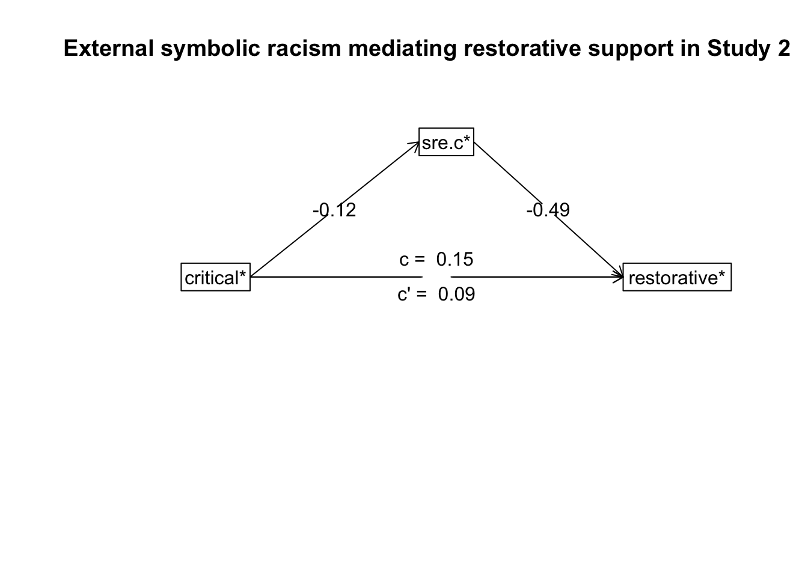
## NULL| Estimate | 95% CI Lower | 95% CI Upper | p-value | |
|---|---|---|---|---|
| ACME | -0.043 | -0.087 | -0.003 | 0.032 |
| ADE | -0.076 | -0.176 | 0.019 | 0.134 |
| Total Effect | -0.118 | -0.225 | -0.012 | 0.022 |
| Prop. Mediated | 0.351 | 0.010 | 1.646 | 0.046 |
## Call: psych::mediate(y = sre.c ~ critical + (restorative) - political -
## female - white - age.c - college - adj_income.c, data = s2,
## main = "Reverse test of external symbolic racism mediating restorative support in Study 2")
##
## Direct effect estimates (traditional regression) (c') X + M on Y
## sre.c* se t df Prob
## Intercept 0.772 0.164 4.70 1034 0.000002900999999999999838019328068927649
## critical -0.079 0.051 -1.56 1034 0.119099999999999997535304885332152480260
## restorative -0.297 0.022 -13.24 1034 0.000000000000000000000000000000000000466
##
## R = 0.454 R2 = 0.206 F = 134 on 2 and 1034 DF p-value: 0.000000000000000000000000000000000000000000000000000146
##
## Total effect estimates (c) (X on Y)
## sre.c* se t df Prob
## Intercept -0.897 0.114 -7.90 1035 0.00000000000000713
## critical -0.122 0.055 -2.25 1035 0.02499000000000000
##
## 'a' effect estimates (X on M)
## restorative se t df
## Intercept 5.629 0.146 38.6 1035
## critical 0.147 0.070 2.1 1035
## Prob
## Intercept 0.0000000000000000000000000000000000000000000000000000000000000000000000000000000000000000000000000000000000000000000000000000000000000000000000000000000000000000000000000000000000000000000000000000000000957
## critical 0.0361199999999999993294252931264054495841264724731445312500000000000000000000000000000000000000000000000000000000000000000000000000000000000000000000000000000000000000000000000000000000000000000000000000000
##
## 'b' effect estimates (M on Y controlling for X)
## sre.c* se t df Prob
## restorative -0.297 0.022 -13.2 1034 0.000000000000000000000000000000000000466
##
## 'ab' effect estimates (through all mediators)
## sre.c* boot sd lower upper
## critical -0.044 -0.044 0.022 -0.087 -0.003
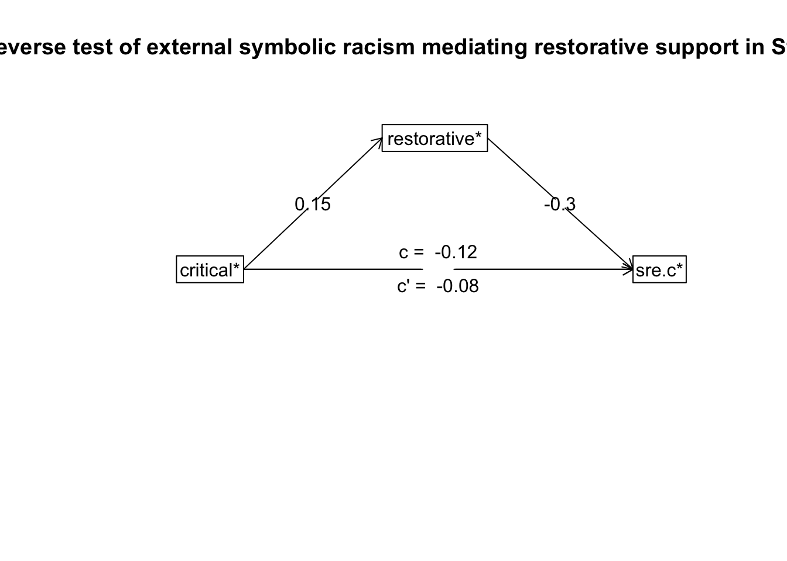
B.9.5 Attitudes Toward Police Experts
The article you read included two perspectives on how to address gun violence in poor neighborhoods:
- Police officials recommended increased law enforcement, stronger penalties, more aggressive prosecutions, police technology, and partnering with neighborhoods for crime tips.
- Policy researchers recommended increasing investments in housing, local business, education, and police-community relations.
In your opinion, when it comes to deciding how to address gun violence, how TRUSTWORTHY are police officials?
In your opinion, when it comes to deciding how to address gun violence, how QUALIFIED are police officials?
B.9.6 Attitudes Toward Policy Experts
The article you read included two perspectives on how to address gun violence in poor neighborhoods:
- Police officials recommended increased law enforcement, stronger penalties, more aggressive prosecutions, police technology, and partnering with neighborhoods for crime tips.
- Policy researchers recommended increasing investments in housing, local business, education, and police-community relations.
In your opinion, when it comes to deciding how to address gun violence, how TRUSTWORTHY are policy researchers?
In your opinion, when it comes to deciding how to address gun violence, how QUALIFIED are policy researchers?
B.9.7 Argument Quality
The article you read includes the perspective that…
“in order to reduce the gun violence problem in poor, (urban/inner-city) neighborhoods of color it is necessary to repair the economic devastation of those communities that was caused by decades of (bad/racist) policies.”
According to that perspective, investment in affordable housing, support for local businesses, and public education (among other things) are needed in order to improve gun violence in those neighborhoods.
In your opinion, how convincing was the argument for that perspective?
In your opinion, how well-supported was that perspective by facts mentioned in the article?
B.9.8 NFC
- Scale: Not at all (1) Slightly (2) Somewhat (3) A great deal (4) Almost completely (5)
- I prefer complex to simple problems. (NFC_SIMPLE)
- I like to have the responsibility of handling a situation that requires a lot of thinking. (NFC_RESP)
- Thinking is not my idea of fun. (NFC_NOTFUN)
- I would rather do something that requires little thought than something that is sure to challenge my thinking abilities. (NFC_NOCHALLENGE)
- I try to anticipate and avoid situations where there is a likely chance that I will have to think in depth about something. (NFC_AVOID)
- I find satisfaction in deliberating hard for long hours. (NFC_SATISFY)
- I only think as hard as I have to. (NFC_ONLY)
- I prefer to think about small daily projects to long-term ones. (NFC_DAILY)
- I like tasks that require little thought once I’ve learned them. (NFC_LITTLE)
- The idea of relying on thought to make my way to the top appeals to me. (NFC_RELY)
- I really enjoy a task that involves coming up with new solutions to problems. (NFC_SOLUTIONS)
- Learning new ways to think doesn’t excite me. (NFC_UNEXCITE)
- I prefer my life to be filled with puzzles that I must solve. (NFC_PUZZLES)
- The notion of thinking abstractly is appealing to me. (NFC_ABSTRACT)
- I would prefer a task that is intellectual, difficult, and important to one that is somewhat important but does not require much thought. (NFC_DIFFICULT)
- I feel relief rather than satisfaction after completing a task that required a lot of mental effort. (NFC_RELIEF)
- It’s enough for me that something gets the job done; I don’t care how or why it works. (NFC_DONE)
- I usually end up deliberating about issues even when they do not affect me personally. (NFC_DELIBERATE)